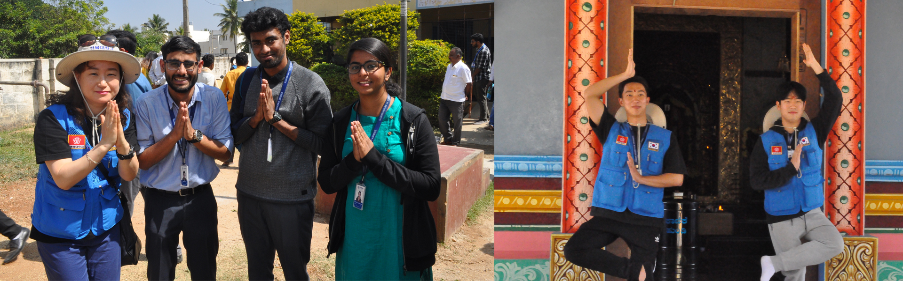

The “United Board for Christian Higher Education in Asia” is committed to education that develops the whole person - intellectually, spiritually, and ethically. The United Board endeavors to respond to the diverse challenges and opportunities. It shares its interests in developing institutions that offer multidisciplinary education and that nurture a spirit of compassion, equity, reconciliation, social responsibility, and mutual respect among religious and cultural traditions.
The pursuit of the Disaster management team to apply an interdisciplinary approach for disaster management solutions led to intense interactions with the Kodagu district authorities. Field visits and frequent stakeholders meetings earned the appreciation of the Kodagu authorities and resulted in an official invitation by Kodagu administration for joint efforts on the subject.
Miami university team consisting of a professor and a student attended the international conference on “A transformational next generation pedagogy” held from 01 Mar to 03 Mar 2018.the two universities are exploring options of joint societal project works and student exchange programme to enhance the objectives of two universities
The KNU students were divided into four groups to work along with four E-SAIL thematic groups. Each group made deliberations on respective themes namely Health, Water, Agriculture, and Disaster Management. The group made an exposure visit to K Chudahalli Village Bengaluru rural district, Karnataka to understand the social and economic needs of rural India.